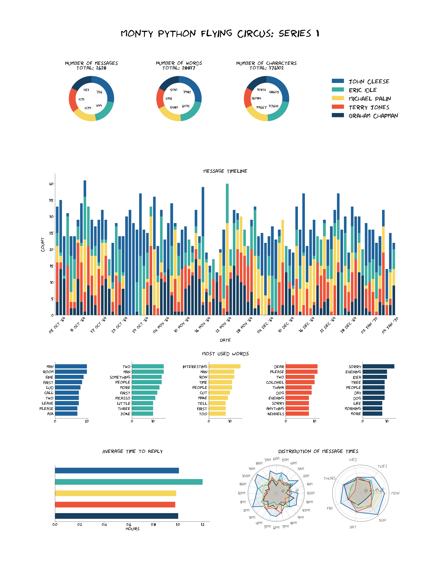

chatviz.visualize_chat¶
-
chatviz.visualize_chat(df, title, colors='default', timeline_freq='MS', timeline_tick_format="%b '%y", timeline_tick_step=6, timeline_color='default', timeline_stacked=False, top_n_words=10, stopwords=None)¶ Creates a series of plots given a dataframe of messages.
The plots created are:
3 donut plots showing the number of messages, words and characters used by each person in the chat.
A bar chart showing the average time to reply in hours for each person.
A timeline showing the number of messages over time, can optionally be split down to per person.
Bar charts showing the most used words by each person.
2 radar plots showing the number of messages sent at each hour and day respectively for each person.
- Parameters
- dfpd.DataFrame
The dataframe of messages. Must have the columns [‘date’, ‘name’, ‘text’].
- titlestr
The title for the plot.
- colors{‘default’} or list of str or dict
The colors to be used for each person in the chat. Should be either ‘default’ in which case the default color scheme is used, a list of colors the same length as the number of names in df[‘name’], or a dict which maps each name to a color. For more info about color options, see here.
- timeline_freq: str
The offset string for the resample frequency in the timeline plot. See here for more. The default is ‘MS’, which will generate a monthly plot.
- timeline_tick_formatstr
The format string for the x tick labels in the timeline plot, which are dates. The default is ‘%b ‘%y’ which gives for example Jan ‘19.
- timeline_tick_stepint
The number of steps between the ticks on the x-axis for the timeline plot. By default this is 6, so every 6 bars will have an x-tick label.
- timeline_colorstr
Only applicable if timeline_stacked is False. In this case, the timeline plot will only be one color, which may want to be different from colors as these are per person. Default is ‘default’ which will just use matplotlibs default color.
- timeline_stackedbool
If True, then a stacked bar chart will be created for the timeline plot, with one color per person involved in the chat. If False (default), will just plot one colored bar with the overall count.
- top_n_wordsint
The number of top words to include in the words bar chart. Default is 10.
- stopwordsNone or iterable
If given, then these words will be removed from the words bar charts. If None, all words will be kept (Note: this will lead to poor results as ‘the’, ‘and’, ‘a’, ‘is’ etc. will be the top words. A stopword list is recommended).
- Returns
- plt.figure
A matplotlib figure with all of the message plots on it.
Examples
This example visualizes the script from Monty Python Flying Circus Series 1. In just a few lines we can used chatviz to create a sophisticated infographic. Note: The dates have been randomly created for this example.
import matplotlib.pyplot as plt from chatviz import visualize_chat from chatviz.utils import STOPWORDS def configure_matplotlib(): plt.rcParams["figure.figsize"] = (30, 40) plt.rc("font", size=18) plt.rc("axes", titlesize=25) plt.rc("axes", labelsize=22) plt.rc("xtick", labelsize=20) plt.rc("ytick", labelsize=20) plt.rc("legend", fontsize=30) plt.rc("figure", titlesize=50) plt.rcParams["font.family"] = "Humor Sans" if __name__ == "__main__": configure_matplotlib() from chatviz.utils import load_example_chat_data df = load_example_chat_data() actors = [ "John Cleese", "Eric Idle", "Michael Palin", "Terry Jones", "Graham Chapman", ] palette = ["#20639B", "#3CAEA3", "#F6D55C", "#ED553B", "#173F5F"] colors = {n: c for (n, c) in zip(actors, palette)} visualize_chat( df, title="Monty Python Flying Circus: Series 1", colors=colors, stopwords=STOPWORDS, timeline_stacked=True, timeline_freq="D", timeline_tick_format="%d %b '%y", ) plt.show()
(Source code, png, hires.png, pdf)

{kind=link}
{kind=link}